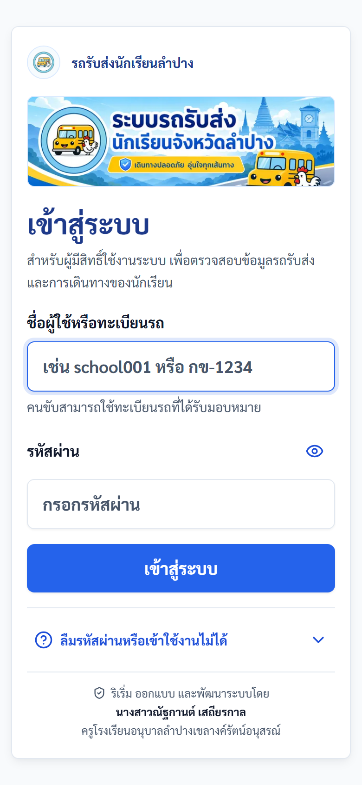
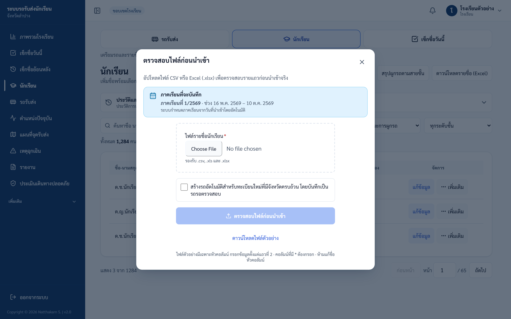
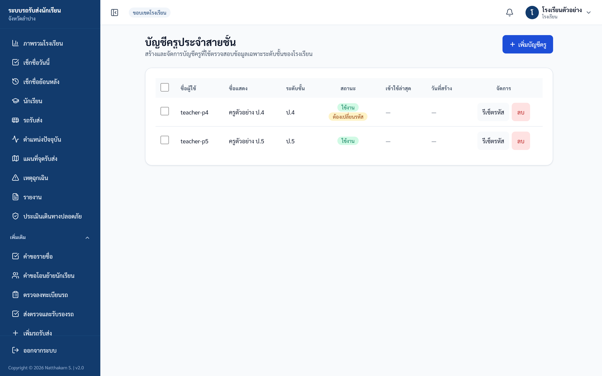
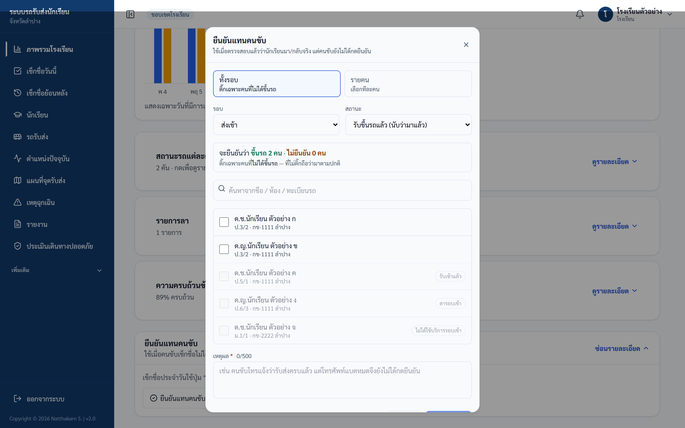
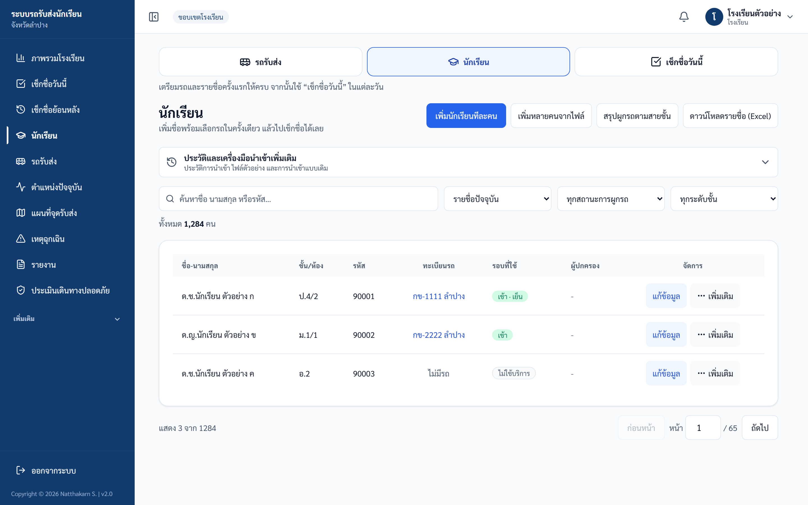
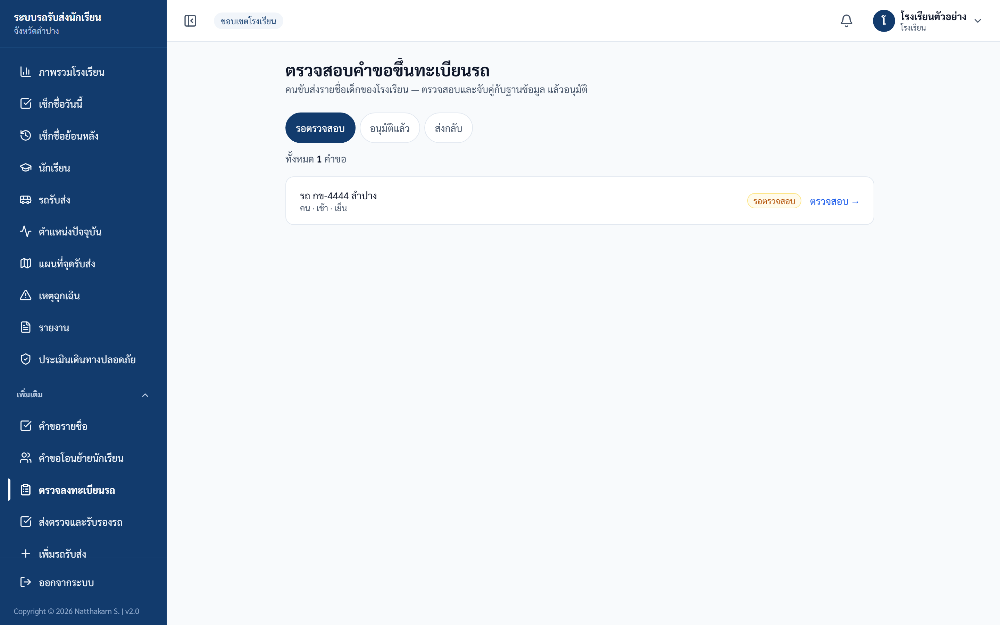
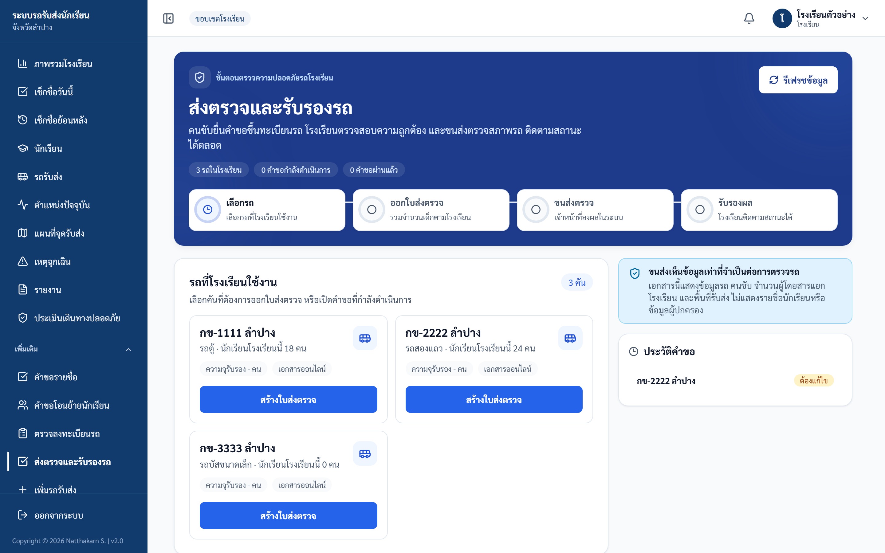
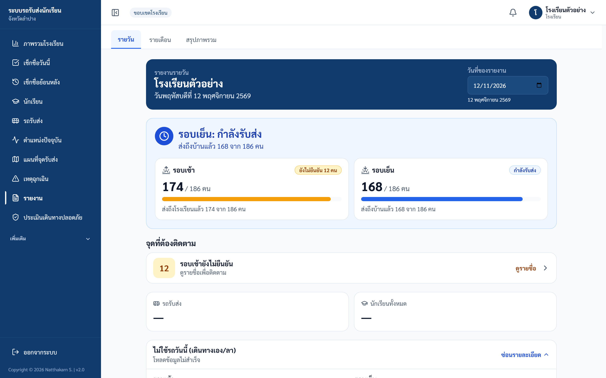
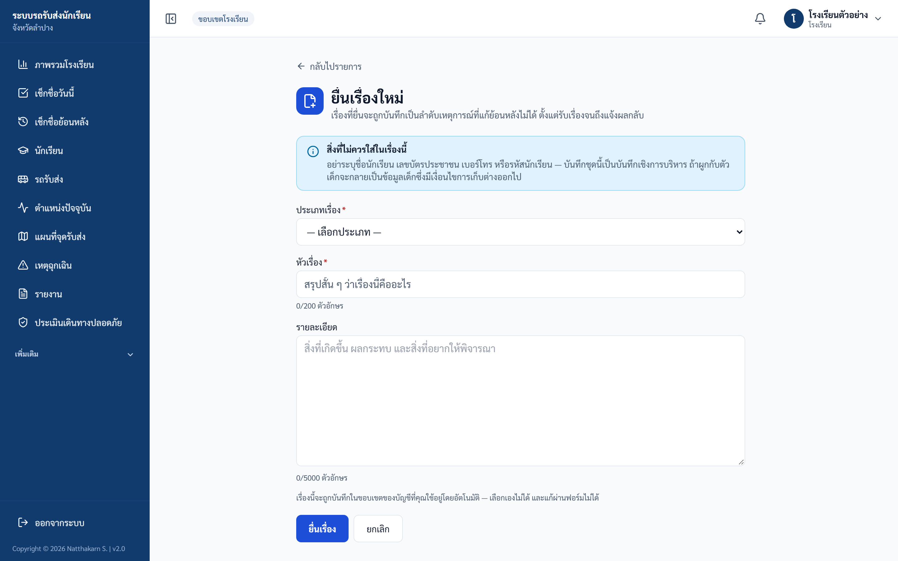

คู่มือโรงเรียน (บัญชีหลักของโรงเรียน)
เว็บไซต์ schoolbuslampang.com · ปรับปรุง 13 พ.ย. 2569 · ภาพในคู่มือเป็นข้อมูลตัวอย่าง
คู่มือนี้สำหรับใคร และทำอะไรได้บ้าง
สำหรับบัญชีหลักของโรงเรียน คือผู้ดูแลระบบของโรงเรียน หรือครูที่รับผิดชอบรถรับส่ง บัญชีนี้ทำได้ทุกอย่างของโรงเรียน:
- ดูภาพรวมทุกวันว่าเด็กถึงโรงเรียนและกลับบ้านครบหรือยัง
- เช็กชื่อเด็กขึ้น-ลงรถได้ทุกชั้น และเช็กชื่อย้อนหลังที่ตกหล่น
- เพิ่มและแก้ข้อมูลนักเรียน และเลือกรถให้เด็ก
- เพิ่มรถรับส่ง และส่งรถไปตรวจสภาพ
- สร้างและดูแลบัญชีครูประจำสายชั้น (ตั้งรหัสใหม่ ย้ายชั้น ปิด/เปิด กู้คืน)
- ตั้งรหัสผ่านใหม่ให้คนขับ แก้ข้อมูลคนขับ หรือเปลี่ยนคนขับของรถที่นักเรียนใช้
- ปิดเหตุฉุกเฉินของรถที่นักเรียนใช้ เมื่อจัดการเรียบร้อยแล้ว
- เลื่อนชั้นนักเรียนเมื่อขึ้นปีการศึกษาใหม่
- ดูรายงาน และดาวน์โหลดเป็นไฟล์
💡 ครูประจำสายชั้นที่ทำแค่เช็กชื่อ ให้อ่าน คู่มือครูเช็กชื่อ แทน บัญชีครูประจำสายชั้นเห็นเฉพาะชั้นของตัวเอง เช็กชื่อ บันทึกมาเอง/ลาของวันนี้ และเช็กชื่อย้อนหลังได้ เพิ่ม แก้ และกู้คืนนักเรียนในชั้นตัวเองได้ เลือกรถให้เด็กได้ เพิ่ม/แก้/ลบจุดรับส่งของนักเรียนชั้นตัวเองได้ และแก้ข้อมูลรถบางส่วนได้ (ประเภท เจ้าของ ประกัน ซึ่งมีผลกับทุกชั้นที่ใช้รถคันนั้น) · งานที่ครูทำไม่ได้: นำเข้าจากไฟล์ ขอโอนย้าย ยกเลิกการลา ยกเลิกเช็กชื่อย้อนหลัง ยืนยันแทนคนขับ ส่งตรวจรถ จัดการบัญชีครู จัดการบัญชีคนขับ ปิดเหตุฉุกเฉิน และเลื่อนชั้น
ภาพรวมขั้นตอนการทำงาน (Flowchart)
บัญชีหลักของโรงเรียนมีงาน 3 ช่วง: ตั้งค่าครั้งแรก · งานทุกวัน · งานที่ทำร่วมกับบทบาทอื่น รายละเอียดอยู่ในหัวข้อด้านล่าง
เริ่ม / จบขั้นตอนที่คุณทำ◆ จุดตัดสินใจงานของบทบาทอื่นเหตุด่วน
เริ่มต้นใช้งาน
เข้าสู่ระบบ
- เปิด schoolbuslampang.com
- พิมพ์ชื่อผู้ใช้ของโรงเรียนในช่อง ชื่อผู้ใช้หรือทะเบียนรถ
- พิมพ์รหัสผ่าน
- กด เข้าสู่ระบบ

ภาพ: หน้าเข้าสู่ระบบ
- ชื่อผู้ใช้ ของบัญชีหลัก ได้จากเขตพื้นที่การศึกษาหรือผู้ดูแลระบบ
- เข้าครั้งแรก ระบบจะให้ตั้งรหัสผ่านใหม่ก่อน รหัสใหม่ต้องยาวอย่างน้อย 8 ตัวอักษร ตั้งเสร็จแล้วให้เข้าสู่ระบบอีกครั้งด้วยรหัสใหม่
- ลืมรหัสผ่าน ให้สังกัด (เขตพื้นที่การศึกษา) รีเซ็ตรหัสให้ หรือกู้เองผ่าน LINE ถ้าผูก LINE ไว้แล้ว (ดูหัวข้อ "กู้รหัสผ่านผ่าน LINE" ด้านล่าง)
- ขึ้นว่า บัญชีถูกปิดใช้งาน แปลว่ารหัสถูก แต่บัญชีถูกปิดไว้ ใต้ข้อความจะบอกว่าต้องติดต่อใคร: บัญชีหลักของโรงเรียน → สำนักงานเขตพื้นที่การศึกษาที่โรงเรียนสังกัด หรือผู้ดูแลระบบ · บัญชีครูประจำสายชั้น → บัญชีหลักของโรงเรียน
- ออกจากระบบ กดชื่อบัญชีที่มุมขวาบน แล้วกด ออกจากระบบ ถ้าใช้เครื่องร่วมกับคนอื่น ให้ออกจากระบบทุกครั้ง

ภาพ: เมนูบัญชีมุมขวาบน
กู้รหัสผ่านผ่าน LINE
ℹ️ ส่วนนี้จะใช้ได้เมื่อระบบเปิดบริการกู้รหัสผ่านผ่าน LINE สำหรับบัญชีโรงเรียน ถ้ายังไม่เห็นเมนู ความปลอดภัยบัญชี แปลว่ายังไม่เปิด ระหว่างนี้ให้สังกัดรีเซ็ตรหัสให้ (ครูประจำสายชั้นให้บัญชีหลักของโรงเรียนรีเซ็ตให้)
ผูก LINE ไว้ก่อน (ทำครั้งเดียว ตอนที่ยังจำรหัสได้):
- เข้าสู่ระบบ แล้วกดชื่อบัญชีที่มุมขวาบน
- กด ความปลอดภัยบัญชี
- กด ยืนยัน LINE แล้วเข้าสู่ระบบ LINE ตามที่จอบอก
- พิมพ์รหัสผ่านปัจจุบันในช่อง รหัสผ่านปัจจุบัน
- กด ผูกบัญชี LINE
ทำเสร็จแล้วจะเห็นหัวข้อ ผูก LINE แล้ว LINE ที่ผูกต้องเพิ่มเพื่อน LINE OA @943glwjf ไว้ด้วย · บัญชีหลักและบัญชีครูแต่ละคนผูก LINE แยกกัน LINE หนึ่งผูกได้บัญชีเดียว
เมื่อลืมรหัสผ่าน:
- ที่หน้าเข้าสู่ระบบ กด ลืมรหัสผ่านหรือเข้าใช้งานไม่ได้
- กด ลืมรหัสผ่าน (กู้ผ่าน LINE)
- พิมพ์ชื่อผู้ใช้ในช่อง ชื่อผู้ใช้ แล้วกด ส่งลิงก์ไปยัง LINE
- เปิด LINE แล้วกดลิงก์ที่ได้รับ ลิงก์ใช้ได้ 15 นาที
- ตั้งรหัสผ่านใหม่ แล้วเข้าสู่ระบบด้วยรหัสใหม่
⚠️ ถ้าบัญชีหลักรีเซ็ตรหัสให้ครู การผูก LINE ของครูคนนั้นจะถูกยกเลิก (เช่นเดียวกับเมื่อสังกัดรีเซ็ตรหัสบัญชีหลัก) ครูต้องผูก LINE ใหม่ด้วยตัวเอง เพื่อไม่ให้ LINE ของคนเดิมกู้บัญชีได้อีก
เมนูอยู่ตรงไหน
- บนคอมพิวเตอร์: เมนูอยู่ด้านซ้าย เมนูที่ใช้ทุกวันอยู่ด้านบน คือ ภาพรวมโรงเรียน · เช็กชื่อวันนี้ · เช็กชื่อย้อนหลัง · นักเรียน · รถรับส่ง · ตำแหน่งปัจจุบัน · แผนที่จุดรับส่ง · เหตุฉุกเฉิน · รายงาน · ประเมินเดินทางปลอดภัย
- เมนูที่ใช้นาน ๆ ครั้งพับไว้ใต้หัวข้อ เพิ่มเติม กดคำว่า เพิ่มเติม เพื่อเปิด
- บนมือถือ: มีแถบด้านล่าง 4 ปุ่ม คือ หน้าแรก · นักเรียน · เช็กชื่อ · รายงาน เมนูอื่นกดปุ่ม ☰ มุมซ้ายบน (หน้า รายงาน ไม่มีแถบด้านล่าง กลับด้วยปุ่ม ☰)
- หน้า รถรับส่ง, นักเรียน และ เช็กชื่อวันนี้ มีปุ่ม 3 ปุ่มเรียงกันด้านบน กดสลับไปมาระหว่าง 3 หน้านี้ได้เลย
💡 คู่มือนี้เขียนเส้นทางเมนูแบบ เพิ่มเติม › ชื่อเมนู หมายถึง ให้เปิดกลุ่ม เพิ่มเติม ก่อน แล้วกดเมนูนั้น
ตั้งค่าครั้งแรก (ทำครั้งเดียว ก่อนเริ่มเช็กชื่อ)
ทำตามลำดับนี้ หน้าจอหน้า นักเรียน ก็เขียนไว้ว่า "เตรียมรถและรายชื่อครั้งแรกให้ครบ จากนั้นใช้ “เช็กชื่อวันนี้” ในแต่ละวัน"
- เพิ่มรถ ที่โรงเรียนใช้ (ถ้ารถยังไม่มีในระบบ)
- เพิ่มนักเรียน และเลือกรถให้เด็กแต่ละคน
- สร้างบัญชีครูประจำสายชั้น ถ้าต้องการให้ครูแต่ละชั้นเช็กชื่อเอง
1. เพิ่มรถรับส่ง
- ไปที่เมนู รถรับส่ง แล้วกด เพิ่มรถรับส่ง (หรือเมนู เพิ่มเติม › เพิ่มรถรับส่ง)
- ค้นหาก่อน: พิมพ์ทะเบียนในช่อง ค้นหารถที่มีอยู่แล้วในระบบ แล้วกด ค้นหา
- ถ้าเจอรถ ให้กด ใช้รถคันนี้ แล้วเพิ่มนักเรียน ไม่ต้องกรอกข้อมูลรถซ้ำ
- ถ้าไม่เจอ ให้กรอกในหัวข้อ เพิ่มรถใหม่: หมวดอักษร (เช่น นข) · เลขทะเบียน · จังหวัด
- กด รายละเอียดรถและคนขับ (กรอกเพิ่มเติมได้) เพื่อใส่ประเภทรถ ชื่อคนขับ เบอร์คนขับ และชื่อเจ้าของรถ
- มีหลายคัน กด + เพิ่มอีกคัน (ได้ครั้งละไม่เกิน 10 คัน)
- กด บันทึกรถใหม่ … คัน
ทำเสร็จแล้วจะเห็นกล่องสีเขียว บันทึกรถ … แล้ว และปุ่ม ต่อไป: เพิ่มนักเรียนขึ้นรถคันนี้
ℹ️ ถ้าใส่ชื่อคนขับ ระบบจะสร้างบัญชีให้คนขับ และแสดง ชื่อผู้ใช้ (ทะเบียนรถ) กับ รหัสผ่านชั่วคราว ในกล่องสีเขียว กด คัดลอกชื่อผู้ใช้และรหัสผ่าน แล้วส่งให้คนขับ รหัสผ่านชั่วคราวแสดงเพียงครั้งเดียว ถ้าออกจากหน้านี้ไปแล้วจะดูอีกไม่ได้ คนขับจะต้องเปลี่ยนรหัสเมื่อเข้าครั้งแรก
ℹ️ รถที่เพิ่มแล้วจะยังไม่ขึ้นในหน้า รถรับส่ง จนกว่าจะมีนักเรียนของโรงเรียนเลือกใช้รถคันนั้น
2. เพิ่มนักเรียนและเลือกรถ
เพิ่มทีละคน (วิธีที่ง่ายที่สุด):
- ไปที่เมนู นักเรียน แล้วกด เพิ่มนักเรียนทีละคน
หรือที่หน้า รถรับส่ง กด เพิ่มนักเรียนใหม่ขึ้นรถคันนี้ ที่การ์ดของรถ ระบบจะเลือกรถให้แล้ว - กรอก รหัสนักเรียน, ชื่อ, นามสกุล (จำเป็น) ชั้น และห้อง
- ที่หัวข้อ 2. เลือกรถรับส่ง เลือกรถของเด็ก (ยังไม่รู้รถ ข้ามไปก่อนได้)
- ถ้ามีข้อมูลผู้ปกครอง ให้กรอกชื่อและเบอร์โทร
- กด ตรวจสอบก่อนบันทึก ดูชื่อและรถให้ถูก แล้วกด ยืนยันเพิ่มนักเรียน
- คนต่อไปนั่งรถคันเดียวกัน กด เพิ่มคนถัดไปในรถคันเดิม
ทำเสร็จแล้วจะเห็นหัวข้อ เพิ่มนักเรียนแล้ว เด็กใช้รถทั้งรอบเช้าและเย็นเป็นค่าเริ่มต้น พร้อมเช็กชื่อได้ทันที
เลือกรถให้เด็กที่มีชื่ออยู่แล้ว:
- ที่หน้า นักเรียน เปลี่ยนตัวกรอง ทุกสถานะการผูกรถ เป็น ยังไม่ผูกรถ เพื่อดูเฉพาะเด็กที่ยังไม่มีรถ
- กดปุ่ม เพิ่มเติม (มีจุดสามจุด ⋯) ท้ายแถวของเด็ก แล้วเลือก เลือกรถ (ถ้ามีรถแล้ว จะเป็น เปลี่ยนรถ)
- เลือกรถ แล้วกด เพิ่มเข้ารถ (หรือ เปลี่ยนรถ) ถ้าต้องการเอาเด็กออกจากรถ ให้เลือกไม่มีรถ แล้วกด ลบออกจากรถ
ในปุ่ม เพิ่มเติม ⋯ ของแต่ละแถวยังมี ออกรหัสผูก LINE (ออกรหัสให้ผู้ปกครองใช้ผูก LINE แล้วกด พิมพ์ใบแจ้งผู้ปกครอง · รหัสแสดงครั้งเดียว) และ ตัดการผูก LINE (ขึ้นเฉพาะเด็กที่ผู้ปกครองผูก LINE แล้ว) สองรายการนี้มีเฉพาะบัญชีหลักของโรงเรียน
เพิ่มหลายคนจากไฟล์ Excel:
- ที่หน้า นักเรียน กด ประวัติและเครื่องมือนำเข้าเพิ่มเติม แล้วกด ดาวน์โหลดไฟล์ตัวอย่าง
- กรอกรายชื่อลงไฟล์ตัวอย่าง ไฟล์มีเฉพาะหัวคอลัมน์ ให้กรอกตั้งแต่แถวที่ 2 (รหัสนักเรียน ชื่อ นามสกุล จำเป็น · ช่องทะเบียนรถต้องมีจังหวัดด้วย) ห้ามแก้ชื่อหัวคอลัมน์ แล้วบันทึกเป็น .xlsx หรือ .csv
- กด เพิ่มหลายคนจากไฟล์ เลือกไฟล์ แล้วกด ตรวจสอบไฟล์ก่อนนำเข้า (ขั้นนี้ยังไม่บันทึก)
- ดูผลรายแถว แถวที่มีปัญหาจะบอกเหตุผล แถวที่ต้องยืนยัน ให้ติ๊กเลือก (ถ้าหัวคอลัมน์ไม่ตรงแบบฟอร์ม ระบบจะไม่ตรวจรายแถว แต่แจ้งว่าไม่พบคอลัมน์ไหน ให้แก้หัวคอลัมน์แล้วเลือกไฟล์ใหม่)
- กด ยืนยันนำเข้า

ภาพ: เลือกไฟล์ แล้วกด "ตรวจสอบไฟล์ก่อนนำเข้า"
⚠️ ไฟล์ .xls (Excel รุ่นเก่า) ใช้ไม่ได้ ถึงหน้าจอจะให้เลือกได้ ให้เปิดใน Excel แล้วบันทึกเป็น .xlsx ก่อน · ไฟล์ต้องไม่เกิน 5MB และไม่เกิน 5,000 แถว
ทำเสร็จแล้วจะเห็นหัวข้อ นำเข้าเสร็จสิ้น นำเข้าผิด ให้แก้ได้ที่ ประวัติการนำเข้า (ดูหัวข้อ "งานอื่น ๆ")
3. สร้างบัญชีครูประจำสายชั้น
- ไปที่เมนู เพิ่มเติม › บัญชีครูประจำสายชั้น
- กด + เพิ่มบัญชีครู
- พิมพ์ ชื่อผู้ใช้ (แนะนำแบบ SCH0001-P4 คือรหัสโรงเรียน-ชั้น) และชื่อแสดง
- เลือก ระดับชั้น ที่ครูดูแล
- ตั้งรหัสผ่าน (อย่างน้อย 8 ตัวอักษร ห้ามเหมือนชื่อผู้ใช้ ห้ามง่ายเกินไป เช่น 12345678) และพิมพ์ซ้ำในช่อง ยืนยันรหัสผ่าน
- กด สร้างบัญชี
- แจ้งชื่อผู้ใช้และรหัสผ่านให้ครู ครูจะต้องเปลี่ยนรหัสเมื่อเข้าครั้งแรก

ภาพ: หน้าบัญชีครูประจำสายชั้น
ทำเสร็จแล้วจะเห็นบัญชีใหม่ในตาราง มีป้าย ต้องเปลี่ยนรหัส จนกว่าครูจะเข้าครั้งแรก
งานประจำวัน (ทำตามลำดับ)
- เช้า: เปิด ภาพรวมโรงเรียน ดูว่ามีอะไรค้าง
- เช้า: เช็กชื่อเด็กที่ถึงโรงเรียน (หรือให้ครูประจำสายชั้นเช็กเอง)
- เย็น: เช็กชื่อเด็กที่ขึ้นรถกลับบ้าน
- ก่อนกลับ: ดูภาพรวมอีกครั้งว่ารอบเย็นครบ
ดูภาพรวมโรงเรียน
หน้านี้ขึ้นเป็นหน้าแรกหลังเข้าสู่ระบบ (มือถือ = ปุ่ม หน้าแรก) อ่านจากบนลงล่าง:
- ปุ่มด้านบน: เช็กชื่อวันนี้ (ปุ่มสีเขียว) · นักเรียน · รถรับส่ง · รายงานวันนี้ (บนมือถือเขียนว่า รายงาน)
- งานรออนุมัติ: (เฉพาะบัญชีหลัก) เรื่องที่รอโรงเรียนตัดสิน เช่น คำขอรับนักเรียนย้ายเข้า (ต่างสังกัด) · คำขอปรับรายชื่อนักเรียนบนรถ (จากคนขับ) · คำขอขึ้นทะเบียนรถจากคนขับ แต่ละแถวบอกจำนวนและรอมากี่วัน เรื่องที่รอเกิน 3 วันมีป้าย ค้างนาน กด ไปดำเนินการ เพื่อเปิดหน้าที่ต้องทำ ถ้าไม่มีอะไรรอจะขึ้นว่า ไม่มีงานค้าง · เรื่องที่รอเกิน 7 วัน ระบบจะแจ้งสังกัดให้ช่วยติดตาม · รายการเดียวกันดูได้จากรูปกระดิ่งที่มุมขวาบนทุกหน้า
- แถบสรุปวันนี้ (กรอบใหญ่ด้านบน): ประโยคเดียวบอกว่าวันนี้เป็นอย่างไร ข้อความเปลี่ยนตามเวลา:
- ระหว่างรอบ บอกสถานะรอบที่กำลังรับส่ง เช่น รอบเช้า: กำลังรับส่ง หรือ รอบเช้ายังค้าง 7 คน (เลยเวลาที่ควรเสร็จแล้ว)
- หลังรอบเช้า ก่อนรอบเย็น สรุปผลรอบเช้า เช่น สรุปรอบเช้า: ยืนยันแล้ว 40/45 คน · ยังไม่ยืนยัน 5 คน
- หลังหมดรอบ ขึ้นเป็นสรุปสีเทา (ไม่ใช่สัญญาณเตือนสีแดง) เช่น สรุปวันนี้: … บอกจำนวนที่ยังไม่ยืนยัน ให้ใช้ติดตามและเช็กชื่อย้อนหลังถ้าจำเป็น
- ครบทุกคนจะขึ้น รับส่งครบทุกคนแล้ว
- ต้องทำวันนี้: รายการงานที่ค้าง แต่ละแถวบอกจำนวนและกดไปทำต่อได้ เช่น นักเรียนที่ยังไม่ผูกกับรถ, นักเรียนที่ข้อมูลผู้ปกครองไม่ครบ, คำขอรายชื่อจากคนขับ รอโรงเรียนอนุมัติ ถ้าไม่มีงานค้างจะขึ้นว่า วันนี้ไม่มีงานค้าง
- รถที่ยังค้าง: (ขึ้นเมื่อมีรถที่ยังมีเด็กค้างในรอบปัจจุบัน) คันที่ค้างมากอยู่บนสุด กด ดูรายชื่อในรถ เพื่อดูว่าเด็กคนไหนยังไม่ยืนยัน
- แยกการเดินทางและการลา: (ขึ้นเมื่อวันนี้มีเด็กมาเอง/กลับเอง/ลา) แสดงสรุปบรรทัดเดียว กดเพื่อดูรายละเอียดเช้า/เย็น
- ตัวเลขประกอบ: นักเรียนทั้งหมด · รถรับส่ง · นักเรียนลา · เหตุฉุกเฉิน 7 วัน
- กราฟ: การรับส่ง 7 วันล่าสุด และรายรถวันนี้ (คันที่ค้างมากอยู่บนสุด)
- ล่างสุด: หัวข้อที่พับไว้ สถานะรถแต่ละคัน · รายการลา · ความครบถ้วนข้อมูล · ยืนยันแทนคนขับ กดที่หัวข้อเพื่อเปิด
| ป้ายบนจอ | หมายความว่า |
|---|---|
| เรียบร้อย (เขียว) | ครบแล้ว ไม่ต้องทำอะไร |
| รอติดตาม (เหลือง) | ยังไม่ครบ ควรตามดู |
| ต้องรีบ (แดง) | ขาดมาก หรือมีเรื่องต้องดูทันที |
| ยังไม่เริ่ม (เทา) | รอบนั้นยังไม่มีใครเช็กชื่อ |
ดูเสร็จแล้วจะรู้ว่าวันนี้ปกติหรือไม่ และต้องตามเรื่องไหน
เช็กชื่อขึ้น-ลงรถ (เช็กชื่อรายห้อง)
หน้านี้ชื่อ เช็กชื่อรายห้อง บัญชีหลักและบัญชีครูใช้หน้าเดียวกัน ต่างกันที่บัญชีหลักต้องเลือกสายชั้นก่อน
- กดปุ่มสีเขียว เช็กชื่อวันนี้ (มือถือ = ปุ่ม เช็กชื่อ ด้านล่าง)
- ดูรอบด้านบนให้ถูก: เช้า · ถึงโรงเรียน หรือ เย็น · กลับบ้าน (คำอธิบายสั้น ๆ ของหน้านี้พับไว้ที่ วิธีใช้หน้านี้ กดเพื่อเปิดอ่าน)
- เลือกชั้นในช่อง สายชั้นที่ต้องการเช็กชื่อ (เช่น ป.1) รายชื่อจะแยกเป็นกล่องตามห้อง
- เด็กทุกคนเริ่มเป็น ใช้รถ (ค่าเริ่มต้น) กด มาเอง (เย็น = กลับเอง) หรือ ลา ให้เด็กที่ไม่ได้ใช้รถรอบนี้
- เห็นเด็กแล้ว กด ยืนยันรายคน ทีละคน หรือเมื่อเห็นครบทั้งห้องแล้ว กด บันทึกทั้งห้อง · ใช้รถ … · มาเอง … · ลา … ล่างสุดของกล่อง แล้วกด ยืนยันบันทึกทั้งห้อง
⚠️ บันทึกทั้งห้อง จะบันทึกเด็กทุกคนที่ยังเป็น ใช้รถ (ค่าเริ่มต้น) ว่าถึงโรงเรียนแล้ว (เย็น = ขึ้นรถแล้ว) ผู้ปกครองเห็นทันที ถ้ายังไม่เห็นเด็กบางคน ให้ใช้ ยืนยันรายคน แทน
บันทึกช้ากว่าเวลาจริง กด แก้เวลา ที่แถวเด็ก · กดผิด กด ยกเลิก (บัญชีครูยกเลิกได้เฉพาะรายการที่บันทึกเอง บัญชีหลักยกเลิกรายการที่บัญชีโรงเรียนบันทึกได้ทุกรายการของวันนี้) รายละเอียดทุกขั้น และความหมายของป้ายข้างชื่อ อ่านใน คู่มือครูเช็กชื่อ หัวข้อ "งานประจำวัน"
บันทึกลาผิด: ที่ ภาพรวมโรงเรียน เปิดหัวข้อ รายการลา (หรือกด ดูรายการลา ในการ์ด รายการลาของวันนี้) กด ยกเลิก ที่รายการนั้น แล้วกด ยกเลิกการลา · บัญชีครูยกเลิกการลาเองไม่ได้ จะมาแจ้งบัญชีหลัก
ℹ️ คนขับยังเช็กชื่อในแอปของคนขับได้ตามปกติ ใครบันทึกก่อน ระบบนับครั้งเดียว เด็กที่บันทึกแล้วจะขึ้นป้าย บันทึกแล้ว ไม่ต้องทำอะไรเพิ่ม
ทำเสร็จแล้วตัวเลขในภาพรวมและรายงานจะเปลี่ยนทันที และผู้ปกครองที่ผูก LINE ไว้จะเห็นสถานะของลูก
เช็กชื่อย้อนหลัง (วันก่อนลืมเช็ก)
ใช้เมื่อวันก่อนเด็กขึ้น-ลงรถจริง แต่ไม่มีใครบันทึก ย้อนหลังได้ไม่เกิน 7 วัน (ไม่รวมวันนี้) ต้องใส่เวลาและเหตุผลทุกครั้ง
- ไปที่เมนู เช็กชื่อย้อนหลัง
- เลือก วันที่ และรอบ รอบเช้า / รอบเย็น หาเด็กได้จากช่อง ค้นหาจากชื่อ / ชั้น / ทะเบียนรถ
- กดปุ่มที่แถวของเด็ก: รอบเช้า บันทึกรับขึ้นรถ หรือ บันทึกส่งถึงโรงเรียน · รอบเย็น บันทึกรับขึ้นรถ หรือ บันทึกส่งถึงบ้าน
- ตรวจ เวลา พิมพ์ เหตุผล เช่น "คนขับแจ้งว่าโทรศัพท์แบตหมด ไม่ได้กดเช็กชื่อในวันนั้น" แล้วกด บันทึก
ทำเสร็จแล้วจะเห็นข้อความ บันทึกการเช็กชื่อย้อนหลังแล้ว และป้ายสีเขียวพร้อมเวลาที่แถวของเด็ก
- บันทึกผิด: กด ยกเลิก ข้างป้ายเวลา พิมพ์เหตุผล แล้วกด ยกเลิกรายการ (รายการเดิมยังอยู่ในประวัติ) บัญชีครูทำขั้นนี้ไม่ได้ จะมาแจ้งบัญชีหลัก
- บัญชีครูเห็นเฉพาะชั้นตัวเอง และมีปุ่มเดียวต่อรอบ: บันทึกมาถึงโรงเรียน / บันทึกขึ้นรถกลับบ้าน
⚠️ รายการย้อนหลังไม่ส่งแจ้งเตือน LINE ถึงผู้ปกครอง และเก็บชื่อผู้บันทึกกับเหตุผลไว้ใน ประวัติการแก้ไข รายการของวันนี้ให้ใช้ เช็กชื่อวันนี้ หรือ ยืนยันแทนคนขับ
งานอื่น ๆ (ทำเมื่อจำเป็น)
ยืนยันแทนคนขับ (เมื่อคนขับลืมกด)
ใช้เมื่อตรวจแล้วว่าเด็กขึ้นรถหรือกลับจริง แต่คนขับไม่ได้กดในแอป ต้องใส่เหตุผลทุกครั้ง งานเช็กชื่อปกติให้ใช้ เช็กชื่อวันนี้ แทน
- ที่ ภาพรวมโรงเรียน เลื่อนลงล่างสุด กด ยืนยันแทนคนขับ เพื่อเปิดหัวข้อ แล้วกดปุ่ม ยืนยันแทนคนขับ อีกครั้ง
- เลือกแบบ ทั้งรอบ (ทั้งรถ) หรือ รายคน (ทีละคน)
- เลือก รอบ (ส่งเช้า / รับเย็น) และ สถานะ (รอบเช้า: รับขึ้นรถแล้ว (นับว่ามาแล้ว) หรือ ส่งถึงโรงเรียนแล้ว · รอบเย็น: ขึ้นรถกลับบ้านแล้ว หรือ ส่งถึงบ้านแล้ว)
- แบบทั้งรอบ: ติ๊กเฉพาะเด็กที่ไม่ได้ขึ้นรถ เด็กที่ไม่ติ๊กจะถูกนับว่ามาตามปกติ
แบบรายคน: ค้นหาแล้วเลือกเด็กที่ต้องการ - พิมพ์ เหตุผล เช่น "คนขับโทรแจ้งว่ารับส่งครบแล้ว แต่โทรศัพท์แบตหมด"
- ดูตัวเลข "จะยืนยันว่า ขึ้นรถ … คน · ไม่ยืนยัน … คน" ให้ถูก แล้วกด ยืนยัน … คน
- ระบบขึ้นกล่อง ตรวจตัวเลขอีกครั้งก่อนบันทึก ถ้าถูกต้อง กด ยืนยันแน่นอน — … คน
ยืนยันแทนผิดคน: ไปที่ เช็กชื่อวันนี้ เลือกรอบและสายชั้น แล้วกด ยกเลิก ที่แถวของเด็กคนนั้น (บัญชีหลักของโรงเรียนยกเลิกรายการที่บัญชีโรงเรียนบันทึกของวันนี้ได้ รายการที่คนขับกดเองยกเลิกที่หน้านี้ไม่ได้)

ภาพ: ยืนยันแทนคนขับ แบบ "ทั้งรอบ"
⚠️ ติ๊ก = ไม่ได้ขึ้นรถ ไม่ใช่ "มา" ถ้าติ๊กกลับด้าน ทั้งคันจะผิด · บันทึกแล้วผู้ปกครองเห็นใน LINE ทันที และยกเลิกเองไม่ได้ · เด็กที่ลา หรือบันทึกไปแล้ว ระบบจะไม่นับซ้ำ
ทำเสร็จแล้วจะเห็น บันทึกสำเร็จ และจำนวนที่ยืนยัน
แก้ข้อมูลนักเรียน
- ไปที่เมนู นักเรียน พิมพ์ชื่อ นามสกุล หรือรหัสในช่องค้นหา (กรองตามชั้นได้ที่ ทุกระดับชั้น)
- กด แก้ข้อมูล ท้ายแถวของเด็ก (เป็นปุ่มเดียวที่เห็นท้ายแถว งานอื่นอยู่ในปุ่ม เพิ่มเติม ⋯ ข้าง ๆ)
- แก้ชื่อ ชั้น ห้อง รอบที่ใช้รถ (ใช้บริการรอบเช้า / ใช้บริการรอบเย็น) หรือข้อมูลผู้ปกครอง
- กด บันทึกข้อมูลนักเรียน

ภาพ: ตารางรายชื่อนักเรียน ปุ่ม "เพิ่มนักเรียนทีละคน" "เพิ่มหลายคนจากไฟล์" "สรุปผูกรถตามสายชั้น" และ "ดาวน์โหลดรายชื่อ (Excel)" อยู่ด้านบน
- เบอร์ผู้ปกครองต้องเป็นเบอร์มือถือ 10 หลัก ขึ้นต้นด้วย 0 (เช่น 0812345678) ใช้เบอร์บ้านไม่ได้ เพราะผู้ปกครองต้องใช้เบอร์นี้ผูก LINE
- ถ้าเปลี่ยนชื่อหรือเบอร์ผู้ปกครอง ผู้ปกครองต้องผูก LINE ใหม่ที่ LINE OA @943glwjf จึงจะเห็นสถานะของลูก
- เด็กย้ายโรงเรียน หรือลาออก: ในหน้าต่างแก้ข้อมูล กด ย้ายโรงเรียน / นำรายชื่อออก แล้วเลือก ขอโอนย้ายนักเรียน (กรอกรหัสโรงเรียนปลายทางและเหตุผล แล้วกด ส่งคำขอโอนย้าย) หรือ ลาออก / ลบออกจากระบบ
- การโอนย้ายเป็นคำขอ ต้องรออนุมัติก่อน ข้อมูลจึงจะย้าย · ถ้าโรงเรียนปลายทางอยู่สังกัดเดียวกัน สังกัด (หรือผู้ดูแลระบบ) เป็นผู้อนุมัติ · ถ้าอยู่ต่างสังกัด โรงเรียนปลายทางเป็นผู้อนุมัติ
ลบนักเรียนหลายคนพร้อมกัน (เช่น นำเข้าข้อมูลทดสอบไว้หลายคน):
- ที่หน้า นักเรียน ใช้ตัวกรองหรือช่องค้นหาให้เหลือเฉพาะรายชื่อที่จะลบ ถ้ามีหลายหน้า เลือก แสดงหน้าละ 50 หรือ 100 คน
- ติ๊กช่องหน้าชื่อเด็กที่จะลบ หรือติ๊กช่องบนหัวตารางเพื่อ เลือกทั้งหมดในหน้านี้
- กด ลบที่เลือก (…) ตรวจรายชื่อในกล่องยืนยัน แล้วกด ลบ … คน
ทำเสร็จแล้วจะขึ้นว่า ลบนักเรียน … คนแล้ว ลบได้ครั้งละไม่เกิน 500 คน และเลือกได้ทีละหน้า · ถ้าลบผิด กู้คืนได้ทีละคนตามวิธีด้านล่าง · ถ้าข้อมูลทดสอบมาจากการนำเข้าไฟล์ ใช้ ประวัติการนำเข้า ย้อนกลับรายการของชุดนั้นได้เช่นกัน (ดูหัวข้อ "ประวัติการนำเข้า")
กู้คืนนักเรียนที่ลบไปแล้ว (เช่น กดลบผิดคน หรือเด็กกลับมาเรียน):
- ที่หน้า นักเรียน เปลี่ยนตัวกรอง รายชื่อปัจจุบัน เป็น รายชื่อที่ลบ
- หาชื่อเด็ก แล้วกด กู้คืน ท้ายแถว
- เลือก ชั้นใหม่ (ไม่บังคับ) และ ห้อง (ไม่บังคับ) ถ้าไม่เลือก จะคงชั้นเดิม
- กด กู้คืนรายชื่อ
ทำเสร็จแล้วชื่อเด็กกลับมาในรายชื่อปัจจุบัน แต่ยังไม่มีรถ ต้องเลือกรถให้ก่อนเช็กชื่อ (ปุ่ม เพิ่มเติม ⋯ › เลือกรถ) · ถ้าเพิ่มเด็กด้วยรหัสที่เคยถูกลบ หน้าต่างเพิ่มนักเรียนจะเสนอปุ่มให้กู้คืนแทนการเพิ่มซ้ำ
สรุปการผูกรถ และดาวน์โหลดรายชื่อนักเรียน
ที่หน้า นักเรียน มีปุ่มด้านบนสำหรับดูภาพรวมและเอารายชื่อออกเป็นไฟล์ บัญชีหลักเห็นทุกสายชั้น บัญชีครูประจำสายชั้นเห็นเฉพาะชั้นตัวเอง
ดูว่าแต่ละชั้นผูกรถครบหรือยัง:
- กด สรุปผูกรถตามสายชั้น
- หน้าต่าง สรุปนักเรียนผูกรถ แยกตามสายชั้น แสดงตัวเลขรวม นักเรียนทั้งหมด · ผูกรถแล้ว · ยังไม่ผูกรถ และตารางแยกตามสายชั้น
- กดตัวเลขในช่อง ผูกรถแล้ว หรือ ยังไม่ผูกรถ ของชั้นใด เพื่อดูรายชื่อเด็ก
- ต้องการไฟล์ กด ดาวน์โหลด Excel ไฟล์มี 3 แผ่นงาน: สรุปตามสายชั้น, ผูกรถแล้ว, ยังไม่ผูกรถ
ดาวน์โหลดรายชื่อนักเรียนเป็น Excel:
- เลือกตัวกรองที่ต้องการก่อน (เช่น ชั้น หรือ ยังไม่ผูกรถ) ถ้าไม่เลือก จะได้ทั้งหมด
- กด ดาวน์โหลดรายชื่อ (Excel)
ทำเสร็จแล้วจะเห็นข้อความ ดาวน์โหลดรายชื่อแล้ว ไฟล์มีคอลัมน์ รหัสนักเรียน · คำนำหน้า · ชื่อ · นามสกุล · สายชั้น · ห้อง · ทะเบียนรถ (หรือ ยังไม่ผูกรถ) · รอบเช้า · รอบเย็น · จุดรับส่ง ไม่มีเบอร์โทรผู้ปกครอง · ได้ครั้งละไม่เกิน 5,000 คน ถ้าเกินจะขึ้นว่า ไฟล์มีไม่เกิน 5,000 คน — ใช้ตัวกรองเพื่อแบ่งดาวน์โหลด · ปุ่มนี้ไม่แสดงตอนดู รายชื่อที่ลบ
⚠️ ไฟล์มีชื่อเด็ก ใช้เฉพาะงานรถรับส่ง อย่าส่งลงกลุ่มไลน์สาธารณะ ระบบบันทึกทุกการดาวน์โหลดไว้ว่าใครทำ
ดูและแก้ข้อมูลรถ
- ไปที่เมนู รถรับส่ง ค้นหาทะเบียนได้จากช่องด้านบน
- การ์ดแต่ละคันบอกคนขับ ผู้ดูแลรถ เจ้าของรถ และจำนวนนักเรียน กด แสดงรายชื่อนักเรียน เพื่อดูเด็กในรถ
- ต้องแก้ประเภทรถ เจ้าของรถ หรือข้อมูลประกัน กด แก้ไขข้อมูลรถ แก้แล้วกด บันทึก
ทะเบียนรถแก้ที่หน้านี้ไม่ได้ ถ้าทะเบียนพิมพ์ผิด ให้แจ้งสำนักงานขนส่งแก้ให้ (หลังแก้ คนขับต้องเข้าสู่ระบบด้วยทะเบียนใหม่) · ชื่อและเบอร์คนขับ คนขับแก้เองได้ในแอปของคนขับ หรือโรงเรียนแก้ให้ตามหัวข้อถัดไป
รีเซ็ตรหัสผ่านคนขับ แก้ข้อมูลคนขับ หรือเปลี่ยนคนขับ
บัญชีคนขับผูกกับรถ (ชื่อผู้ใช้คือทะเบียนรถ) ทุกโรงเรียนที่มีนักเรียนนั่งรถคันนั้นทำเรื่องเหล่านี้ได้เอง ไม่ต้องรอผู้ดูแลระบบ เฉพาะบัญชีหลักของโรงเรียน
- ไปที่เมนู รถรับส่ง หาการ์ดของรถคันนั้น
- เลือกปุ่มตามเรื่องที่ต้องทำ:
- รีเซ็ตรหัสผ่านคนขับ — คนขับลืมรหัส ระบบสร้างรหัสผ่านชั่วคราวใหม่ คนขับที่เข้าระบบอยู่จะถูกออกจากระบบทันที
- แก้ไขข้อมูลคนขับ — คนเดิม แต่ชื่อหรือเบอร์ผิด แก้ ชื่อคนขับ และ เบอร์โทรคนขับ (ปุ่มนี้ขึ้นเฉพาะรถที่มีชื่อคนขับแล้ว)
- เปลี่ยนคนขับ — เปลี่ยนเป็นคนขับคนใหม่ พิมพ์ ชื่อคนขับคนใหม่ และเบอร์โทร
- ใส่ เหตุผล (ถ้ามี) แล้วกดปุ่มยืนยัน (รีเซ็ตรหัสผ่าน / บันทึก / เปลี่ยนคนขับ)
- ถ้าขึ้นหน้าต่าง รหัสผ่านชั่วคราวของคนขับ ให้จด ชื่อผู้ใช้ และ รหัสผ่านชั่วคราว ส่งให้คนขับ แล้วกด บันทึกรหัสแล้ว ปิดหน้าต่าง
ทำเสร็จแล้วจะเห็น: ข้อความยืนยัน และข้อมูลคนขับในการ์ดรถเปลี่ยนตาม คนขับเข้าสู่ระบบด้วยรหัสชั่วคราว แล้วต้องตั้งรหัสใหม่
⚠️ รหัสผ่านชั่วคราวแสดงครั้งเดียว ปิดหน้าต่างแล้วดูอีกไม่ได้ ต้องรีเซ็ตใหม่ · เปลี่ยนคนขับ ทำให้คนขับเดิมเข้าระบบไม่ได้อีก และการผูก LINE สำหรับกู้รหัสของบัญชีรถถูกยกเลิก (รีเซ็ตรหัสก็ยกเลิกการผูก LINE เช่นกัน) ประวัติการรับส่งเดิมยังอยู่ครบ · ถ้าบัญชีรถถูกผู้ดูแลระบบปิดหรือลบไว้ ระบบจะแจ้งให้ติดต่อผู้ดูแลระบบ
ตรวจรายชื่อเด็กที่คนขับส่งมา
คนขับส่งรายชื่อเด็กที่นั่งรถมาให้โรงเรียนตรวจ ต้องตรวจให้ครบก่อนรถจะพร้อมใช้งาน
- ไปที่เมนู เพิ่มเติม › ตรวจลงทะเบียนรถ แท็บ รอตรวจสอบ
- กด ตรวจสอบ → ที่รถคันนั้น
- แต่ละชื่อ ระบบจะเสนอเด็กที่ตรงกัน ถ้าใช่ กด ยืนยัน ถ้าไม่เจอ กด ค้นหาเอง ถ้าไม่ใช่เด็กของเรา กด ไม่ใช่เด็กของโรงเรียนนี้
- ในหัวข้อ เอกสารรถและคนขับ กด ดูไฟล์ แล้วกด ผ่าน หรือ ไม่ผ่าน (ไม่ผ่านต้องใส่เหตุผล)
- ตรวจครบแล้ว กด อนุมัติทั้งหมด ถ้าข้อมูลผิด กด ส่งกลับแก้ไข และใส่เหตุผล

ภาพ: หน้าตรวจลงทะเบียนรถ
ถ้ายังตรวจไม่ครบ ปุ่มจะเป็น ตรวจให้ครบก่อน (เหลือ …) และกดไม่ได้ ปุ่มนี้ไม่ได้ดูเอกสาร จึงควรตรวจเอกสารให้เสร็จก่อนอนุมัติ
หลังอนุมัติ: จัดนักเรียนขึ้นรถคันนี้ การอนุมัติยังไม่ได้ย้ายเด็กขึ้นรถ ให้ทำต่อในหน้าเดียวกัน
- เลื่อนลงไปที่กล่อง จัดนักเรียนที่อนุมัติขึ้นรถ … (คำขอที่อนุมัติไปแล้ว เปิดจากแท็บ อนุมัติแล้ว ได้)
- ดูป้ายข้างชื่อเด็ก: ยังไม่มีรถ · อยู่รถคันอื่น · อยู่รถคันนี้แล้ว เด็กที่อยู่รถคันอื่นจะยังไม่ถูกติ๊กไว้
- ติ๊กเด็กที่จะให้นั่งรถคันนี้ แล้วกด จัดนักเรียนที่เลือก (… คน) ขึ้นรถคันนี้
- อ่านหน้าต่าง ยืนยันจัดนักเรียนขึ้นรถ แล้วกด ยืนยัน
ทำเสร็จแล้วจะเห็น: ข้อความ จัดนักเรียนขึ้นรถแล้ว เด็กขึ้นในรายชื่อรถคันนี้ทันที ถ้าจัดครบแล้วจะขึ้นว่า นักเรียนที่อนุมัติทั้งหมดอยู่บนรถคันนี้แล้ว
⚠️ เด็กที่ย้ายมาจากรถคันอื่น จะถูกนำออกจากรถคันเดิม และจุดรับส่งของรถคันเดิมจะถูกล้าง ต้องกำหนดจุดรับส่งใหม่ที่ แผนที่จุดรับส่ง
ส่งรถไปตรวจสภาพ
- ไปที่เมนู เพิ่มเติม › ส่งตรวจและรับรองรถ
- เลือกรถ แล้วกด สร้างใบส่งตรวจ
- ถ้าคนขับยื่นเรื่องมาเอง (สถานะ รอตรวจสอบ) ให้กด ตรวจสอบถูกต้อง หรือ ปฏิเสธคำขอ
- กด ยืนยันข้อมูลพร้อมพิมพ์
- กด พิมพ์ใบส่งตรวจ แล้วให้คนขับนำรถไปตรวจที่ขนส่ง ใบนี้มี QR ให้เจ้าหน้าที่สแกน

ภาพ: หน้าส่งตรวจและรับรองรถ
ใบส่งตรวจไม่มีชื่อเด็กหรือเบอร์โทร มีแค่จำนวนเด็กแต่ละโรงเรียน กลับมาดูสถานะที่หน้านี้ได้ เช่น ผ่าน / ไม่ผ่าน / ต้องแก้ไข ถ้าต้องการยกเลิก กด ยกเลิกคำขอ แล้วสร้างใบใหม่
เลื่อนชั้นปีการศึกษาใหม่ (ปีละครั้ง)
ทำครั้งเดียวเมื่อขึ้นปีการศึกษาใหม่ เฉพาะบัญชีหลักของโรงเรียน บัญชีครูไม่เห็นเมนูนี้
- ไปที่เมนู เพิ่มเติม › เลื่อนชั้นปีการศึกษาใหม่
- เลือก ปีการศึกษา (พ.ศ.) ระบบแสดงตัวอย่าง (ยังไม่บันทึก) ว่า ชั้นเดิม จะไป ชั้นใหม่ ใด และกี่คน
- เด็ก ป.6 ม.3 และ ม.6 จะเป็น จบการศึกษา (นำออกจากรายชื่อและถอดรถ) · อ.3 ขึ้น ป.1
- โรงเรียนขยายโอกาส (ถึง ม.3) หรือโรงเรียนที่มี ม.1–ม.6: ระบบไม่เลื่อน ป.6 ขึ้น ม.1 และ ม.3 ขึ้น ม.4 ให้ ถ้าเด็กเรียนต่อที่โรงเรียนเดิม ให้ติ๊กชื่อเด็กเหล่านี้ใน ยกเว้นรายคน ก่อนยืนยัน แล้วหลังเลื่อนชั้นเสร็จ ไปแก้ชั้นเป็น ม.1 หรือ ม.4 ที่หน้า นักเรียน (รถเดิมยังอยู่)
- เด็กที่ไม่ต้องเลื่อน (เช่น ซ้ำชั้น หรือย้ายออก) เปิดหัวข้อ ยกเว้นรายคน · … แล้วติ๊กชื่อ คนที่ติ๊กจะคงชั้นเดิมและรถเดิม
- ถ้ามีกล่อง อ่านชั้นไม่ออก … คน ให้แก้ชั้นของเด็กเหล่านั้นที่หน้า นักเรียน ก่อน (ไม่อย่างนั้นจะไม่ถูกเลื่อน)
- ตรวจตัวเลข เลื่อน … คน · จบการศึกษา … คน · ยกเว้น … คน แล้วกด ตรวจแล้ว ยืนยันเลื่อนชั้นปี … และกด ยืนยันเลื่อนชั้น
ทำเสร็จแล้วจะเห็นกล่อง เลื่อนชั้นสำเร็จ พร้อมจำนวนคน
⚠️ กดได้ครั้งเดียวต่อปีการศึกษา (ครั้งต่อไปจะขึ้นว่า เลื่อนชั้นปีการศึกษานี้ไปแล้ว) · ตรวจตัวอย่างและรายการยกเว้นให้ครบก่อนยืนยัน · ถ้าเด็กจบการศึกษาผิดคน (รวมถึงเด็ก ป.6 หรือ ม.3 ที่เรียนต่อที่เดิมแต่ลืมยกเว้น) กู้คืนได้จาก รายชื่อที่ลบ ในหน้านักเรียน เลือก ชั้นใหม่ เป็น ม.1 หรือ ม.4 แล้วเลือกรถให้ใหม่ (ปุ่ม เพิ่มเติม ⋯ › เลือกรถ) เพราะรถถูกถอดไปแล้ว · หลังเลื่อนชั้น ตรวจว่าบัญชีครูประจำสายชั้นยังตรงกับชั้นที่ครูดูแลจริง ถ้าไม่ตรง กด แก้ไข / ย้ายชั้น ที่หน้า บัญชีครูประจำสายชั้น
จัดการบัญชีครู (ลืมรหัส / ย้ายชั้น / ปิด-เปิด / ลบ / กู้คืน)
ทุกเรื่องอยู่ที่เมนู เพิ่มเติม › บัญชีครูประจำสายชั้น เฉพาะบัญชีหลักของโรงเรียน
- ครูลืมรหัส: กด รีเซ็ตรหัส ที่ชื่อครู ตั้งรหัสใหม่ แล้วกด รีเซ็ตรหัสผ่าน (การผูก LINE สำหรับกู้รหัสของครูคนนั้นจะถูกยกเลิก)
- แก้ชื่อ หรือย้ายครูไปชั้นอื่น (เช่น ขึ้นปีการศึกษาใหม่): กด แก้ไข / ย้ายชั้น แก้ ชื่อแสดง หรือเลือก ระดับชั้น ใหม่ แล้วกด บันทึก ไม่ต้องลบแล้วสร้างใหม่ · ย้ายชั้นแล้ว ครูต้องเข้าสู่ระบบใหม่ จึงจะเห็นชั้นใหม่
- พักการใช้บัญชีชั่วคราว: กด ปิดใช้งาน ครูจะเข้าสู่ระบบไม่ได้ (ขึ้นว่า บัญชีถูกปิดใช้งาน และให้ติดต่อบัญชีหลักของโรงเรียน) เปิดคืนด้วยปุ่ม เปิดใช้งาน · หรือเลือก สถานะ ในหน้าต่าง แก้ไข / ย้ายชั้น
- ลบบัญชี: กด ลบ แล้วกด ลบบัญชี (ลบหลายคน ให้ติ๊กหน้าแถว แล้วกด ลบบัญชีที่เลือก)
- ลบผิด: กด บัญชีที่ลบแล้ว แล้วกด กู้คืน ที่ชื่อครู บัญชีที่กู้คืนจะอยู่ในสถานะปิดใช้งาน กด เปิดใช้งาน ในตารางเมื่อพร้อม
ระบุครูประจำชั้นของแต่ละห้อง
บอกระบบว่าห้องไหนมีใครเป็นครูประจำชั้น ชื่อครูจะไปแสดงในหน้าเช็กชื่อรายห้อง หน้ารายชื่อนักเรียนและไฟล์ Excel การ์ดเด็กในหน้ารายชื่อของคนขับ และข้อความ สถานะ ใน LINE ของผู้ปกครอง
- ไปที่เมนู เพิ่มเติม › ครูประจำชั้น
- หน้าจอแสดงทุกห้องที่มีนักเรียน แยกตามชั้น กดปุ่ม ยังไม่มีครูประจำชั้น ด้านบนเพื่อดูเฉพาะห้องที่ยังไม่ได้ระบุ
- ที่การ์ดของห้อง กด เพิ่มครูประจำชั้น
- ช่อง ชื่อครู พิมพ์ชื่อ เช่น ครูสมใจ ใจดี
- ช่อง เบอร์โทร พิมพ์เบอร์ (ไม่บังคับ) แล้วกด บันทึก
- ห้องที่มีครูหลายคน กด เพิ่มครูประจำชั้น ซ้ำ
ทำเสร็จแล้วจะเห็น: ชื่อครูในการ์ดของห้องนั้น แก้ได้ด้วยปุ่ม แก้ไข และลบได้ด้วยปุ่ม ลบ
⚠️ เบอร์โทรที่กรอก คนขับรถที่เด็กในห้องนั้นนั่ง และผู้ปกครองที่ผูก LINE กับเด็กในห้องนั้นจะเห็นได้ ใส่เฉพาะเบอร์ที่ครูยินดีให้ติดต่อ
แก้ไขได้เฉพาะบัญชีหลักของโรงเรียน บัญชีครูประจำสายชั้นเปิดหน้านี้ได้แต่ดูอย่างเดียว เฉพาะชั้นของตัวเอง · ห้องที่ไม่ขึ้นในรายการ แปลว่ายังไม่มีนักเรียนที่ระบุชั้นและห้องนั้น ให้แก้ชั้น/ห้องของนักเรียนก่อน
ดูรถที่วิ่งหลายเที่ยว
ดูว่ารถคันไหนที่รับส่งนักเรียนของโรงเรียนต้องวิ่งมากกว่า 1 เที่ยวในรอบเดียว และคนขับให้เหตุผลว่าอะไร (เช่น ที่นั่งไม่พอ) ใช้ประกอบการพิจารณาจัดรถเพิ่ม
- ไปที่เมนู เพิ่มเติม › รถที่วิ่งหลายเที่ยว
- เลือกช่วงวันที่ในช่อง ตั้งแต่วันที่ และ ถึงวันที่ (ค่าแรกคือวันนี้ เลือกได้ไม่เกิน 31 วัน)
ทำเสร็จแล้วจะเห็น: ตารางแสดง ทะเบียนรถ · วันที่ และรอบ (เช้า/เย็น) · จำนวนเที่ยว · เหตุผล ถ้าไม่มีรถคันไหนวิ่งหลายเที่ยว จะขึ้นว่า ไม่มีรถที่วิ่งหลายเที่ยวในช่วงวันที่นี้
ข้อมูลนี้มาจากคนขับกดปุ่ม เริ่มเที่ยวที่ 2 (หรือเที่ยวถัดไป) ในหน้าของคนขับ หน้านี้ดูได้อย่างเดียว
รายงานและดาวน์โหลดไฟล์
- ไปที่เมนู รายงาน
- เลือกแท็บ รายวัน, รายเดือน หรือ สรุปภาพรวม แล้วเลือกวันที่หรือเดือน (ใต้ช่องวันที่มีวันที่แบบ พ.ศ. ให้ตรวจว่าเลือกถูกวัน เพราะปฏิทินของเครื่องอาจแสดงเป็น ค.ศ.)
- ต้องการไฟล์ เลื่อนลงไปที่ ดาวน์โหลด: แล้วกด CSV, Excel หรือ PDF

ภาพ: รายงานรายวัน
ทำเสร็จแล้วจะเห็นข้อความ ดาวน์โหลด … สำเร็จ ไฟล์มีเฉพาะข้อมูลของโรงเรียนคุณ
รายงานรายวันหลังหมดรอบ กรอบบนสุดจะขึ้นสรุปสีเทา เช่น สรุปวันนี้: ยังยืนยันไม่ครบ ส่วนจำนวนคนที่ยังไม่ยืนยันอยู่ในหัวข้อ จุดที่ต้องติดตาม ด้านล่าง
แผนที่จุดรับส่ง และตำแหน่งปัจจุบัน (เมนูหลัก)
สองเมนูนี้อยู่ในเมนูหลัก ต่อจาก รถรับส่ง (มือถือ: กด ☰ ก่อน)
เพิ่มจุดรับส่ง:
- ไปที่เมนู แผนที่จุดรับส่ง แล้วกด เพิ่มจุดรับส่ง
- เลือก รถ ก่อน แล้วพิมพ์ ป้ายชื่อจุด (เช่น หน้าโรงเรียน, ปาก ซ.5)
- คลิกบนแผนที่เพื่อกำหนดพิกัด (หรือพิมพ์ ละติจูด / ลองจิจูด) แล้วเลือก รอบ: รอบเช้า · รอบเย็น · ทั้งวัน
- ติ๊กเด็กที่ใช้จุดนี้ แล้วกด บันทึก
ทำเสร็จแล้วจะเห็นจุดใหม่ใน รายการจุดรับส่ง และบนแผนที่ · เปลี่ยนเด็กในจุด กด แก้ไขรายชื่อนักเรียน · ลบจุด กด ลบ แล้วกด ลบจุดรับส่ง (เด็กไม่ถูกเอาออกจากรถ แต่จะไม่มีจุดรับส่งจนกว่าจะกำหนดใหม่)
แก้ชื่อหรือย้ายตำแหน่งจุดรับส่ง (เฉพาะบัญชีหลักของโรงเรียน):
- ใน รายการจุดรับส่ง กด แก้ชื่อ/ตำแหน่ง ที่จุดนั้น
- แก้ ป้ายชื่อจุด ได้ตามต้องการ
- คลิกบนแผนที่ตรงตำแหน่งใหม่ (หรือพิมพ์ ละติจูด / ลองจิจูด) ใส่ หมายเหตุ (ไม่บังคับ) ได้
- กด บันทึก
ทำเสร็จแล้วจะเห็น: ข้อความ บันทึกจุดรับส่งแล้ว และหมุดบนแผนที่ย้ายไปตำแหน่งใหม่ · รอบเดินรถและรายชื่อเด็กยังแก้ที่ปุ่ม แก้ไขรายชื่อนักเรียน เหมือนเดิม · จุดที่มีนักเรียนของโรงเรียนอื่นใช้ร่วมอยู่ ย้ายตำแหน่งไม่ได้ ให้สร้างจุดใหม่ แล้วย้ายนักเรียนของโรงเรียนคุณไปจุดนั้นแทน · ครูประจำสายชั้นไม่เห็นปุ่มนี้
ครูประจำสายชั้นก็เพิ่ม แก้ และลบจุดรับส่งได้ แต่เฉพาะเด็กชั้นตัวเอง: เลือกได้เฉพาะรถที่มีเด็กชั้นนั้น ต้องติ๊กเด็กชั้นตัวเองอย่างน้อย 1 คน และลบจุดที่ชั้นอื่นใช้อยู่ไม่ได้ (ให้แก้รายชื่อเอาเด็กชั้นตัวเองออกแทน)
ตำแหน่งปัจจุบัน: ดูตำแหน่งรถบนแผนที่ รถขึ้นเฉพาะตอนที่คนขับเปิดส่งตำแหน่ง
ประวัติเส้นทางรถ: จากหน้า ตำแหน่งปัจจุบัน กด ประวัติเส้นทาง ใต้รถ เลือกวันจาก 7 วันล่าสุด แล้วกด เล่น หรือเลื่อนแถบเวลา · เส้นน้ำเงิน = รอบเช้า เส้นส้ม = รอบเย็น เส้นประ = สัญญาณขาดเกิน 3 นาที · ระบบเก็บย้อนหลัง 7 วัน บันทึกเฉพาะ 05:00–09:00 และ 15:00–19:00 น. · ครูประจำสายชั้นเห็นเฉพาะรถที่มีนักเรียนชั้นตน
ประเมินการเดินทางปลอดภัย
ให้โรงเรียนประเมินการเดินทางของนักเรียนใน ระบบประเมินการเดินทางที่ปลอดภัยของเด็กนักเรียน ซึ่งเป็นเว็บไซต์ภายนอก
- ไปที่เมนู ประเมินเดินทางปลอดภัย (หัวหน้าจอเขียนว่า ประเมินการเดินทางปลอดภัย)
- กด เปิดแบบประเมิน เว็บไซต์ tcc-safe-travel.web.app จะเปิดในแท็บใหม่
- อ่านคำชี้แจงบนเว็บไซต์ กรอกข้อมูลตามความเป็นจริงของโรงเรียน แล้วส่งแบบประเมินให้ครบตามขั้นตอนของเว็บไซต์
ระบบรถรับส่งนักเรียนไม่ได้ส่งข้อมูลนักเรียนไปยังเว็บไซต์นี้ ถ้ามีคำถามเรื่องแบบประเมิน ให้ดูคำชี้แจงบนเว็บไซต์นั้น
ปิดเหตุฉุกเฉิน
เมื่อคนขับแจ้งเหตุ และโรงเรียนจัดการเรียบร้อยแล้ว ให้ปิดเหตุพร้อมบันทึกว่าทำอะไรไป เฉพาะบัญชีหลักของโรงเรียน (ครูประจำสายชั้นดูได้อย่างเดียว)
- ไปที่เมนู เหตุฉุกเฉิน เหตุที่ยังไม่จบมีป้าย ยังไม่ปิด
- กด ปิดเหตุ ที่เหตุนั้น
- เลือก ผลการดำเนินการ: แก้ไขแล้ว หรือ แจ้งผิด/ไม่ใช่เหตุฉุกเฉิน
- พิมพ์ บันทึกการแก้ไขเหตุ (ต้องกรอก) เช่น ติดต่อคนขับแล้ว รถซ่อมเสร็จ นักเรียนปลอดภัยทุกคน
- กด ปิดเหตุ
ทำเสร็จแล้วจะเห็น: ข้อความ ปิดเหตุฉุกเฉินแล้ว และป้ายเปลี่ยนเป็น ปิดแล้ว · … บันทึกของคุณต่อท้ายใน หมายเหตุ/ประวัติ ระบบเก็บว่าใคร บทบาทใด ปิดเหตุเมื่อใด
ปิดได้เฉพาะเหตุของรถที่นักเรียนของโรงเรียนใช้ สังกัด จังหวัด ผู้ดูแลระบบ และคนขับของรถคันนั้น (ปุ่ม แก้ไขแล้ว) ก็ปิดเหตุได้ ถ้าใครปิดไปก่อนแล้ว ไม่ต้องทำซ้ำ
เมนูอื่นในกลุ่ม "เพิ่มเติม"
| เมนู | ใช้ทำอะไร |
|---|---|
| เหตุฉุกเฉิน (เมนูหลัก) | ดูเหตุที่คนขับแจ้งจากรถของโรงเรียน และปิดเหตุเมื่อจัดการแล้ว (ดูหัวข้อ "ปิดเหตุฉุกเฉิน") |
| คำขอรายชื่อ | คำขอเพิ่มหรือถอนเด็กจากรถแบบเดิม ถ้ามีค้าง กด อนุมัติ หรือ ปฏิเสธ (คำขอใหม่จากคนขับจะไปอยู่ที่ ตรวจลงทะเบียนรถ) |
| คำขอโอนย้ายนักเรียน | รับหรือไม่รับนักเรียนที่โอนเข้ามาจากโรงเรียนต่างสังกัด เลือก รอโรงเรียนพิจารณา กด พิจารณา อ่านชื่อ ชั้น โรงเรียนต้นทาง เหตุผล และจำนวนผู้ปกครองที่ผูก LINE แล้วกด อนุมัติรับเข้า หรือ ไม่อนุมัติ และกดยืนยันอีกครั้ง อนุมัติแล้วเด็กจะอยู่ในรายชื่อโรงเรียนของคุณ ยังไม่มีรถ ผู้ปกครองเดิมเห็นข้อมูลต่อได้ · หน้านี้ยังใช้ดูสถานะคำขอโอนออกได้ด้วย · โอนย้ายภายในสังกัดเดียวกันยังให้สังกัดอนุมัติ · ใช้ได้เฉพาะบัญชีหลักของโรงเรียน |
| ครูประจำชั้น | ระบุครูประจำชั้นของแต่ละห้อง (ดูหัวข้อ "ระบุครูประจำชั้นของแต่ละห้อง") |
| รถที่วิ่งหลายเที่ยว | ดูรถที่ต้องวิ่งมากกว่า 1 เที่ยวในรอบเดียว พร้อมเหตุผล (ดูหัวข้อ "ดูรถที่วิ่งหลายเที่ยว") |
| ประวัติการแก้ไข | ดูว่าใครเพิ่ม แก้ หรือลบอะไร เมื่อไร |
| เลื่อนชั้นปีการศึกษาใหม่ | เลื่อนชั้นนักเรียนทั้งโรงเรียนปีละครั้ง (ดูหัวข้อ "เลื่อนชั้นปีการศึกษาใหม่") |
| นโยบายและสิทธิของฉัน | อ่านประกาศเรื่องการใช้ข้อมูล ถ้ายังไม่มีฉบับที่อนุมัติ หน้าจะว่าง |
| เรื่องที่ต้องมีส่วนร่วม / สรุปการมีส่วนร่วม | ยื่นข้อเสนอหรือข้อกังวลให้หน่วยงานพิจารณาและแจ้งผลกลับ ไม่ใช่ช่องทางแจ้งเหตุด่วน (ดูด้านล่าง) |
ประวัติการนำเข้า (แก้เมื่อนำเข้าผิด)
- ที่หน้า นักเรียน กด ประวัติและเครื่องมือนำเข้าเพิ่มเติม แล้วกด ประวัติการนำเข้า
- เลือกชุดที่นำเข้าผิด
- ติ๊กรายการ แล้วกด ย้อนกลับรายการที่เลือก
- พิมพ์ เหตุผลในการย้อนกลับ แล้วกด ยืนยันย้อนกลับ
ระบบจะซ่อนเฉพาะนักเรียนที่ชุดนั้นเพิ่มเข้ามา ไม่กระทบนักเรียนที่มีอยู่เดิม
เรื่องที่ต้องมีส่วนร่วม
- ไปที่เมนู เพิ่มเติม › เรื่องที่ต้องมีส่วนร่วม ค้นดูก่อนว่ามีเรื่องเดียวกันแล้วหรือยัง
- กด ยื่นเรื่องใหม่ เลือกประเภท พิมพ์หัวเรื่องและรายละเอียด
- กด ยื่นเรื่อง แล้วกลับมาดูความคืบหน้าที่ ดูรายละเอียด

ภาพ: แบบฟอร์มยื่นเรื่องใหม่
⚠️ บันทึกแล้วแก้หรือลบไม่ได้ · ระบบไม่แจ้งเตือนใครเมื่อมีเรื่องใหม่ ต้องเปิดดูเอง · ห้ามพิมพ์ชื่อเด็ก เลขบัตรประชาชน หรือเบอร์โทร ในเรื่อง · บัญชีครูประจำสายชั้นก็ยื่นและบันทึกเรื่องในนามโรงเรียนได้ ควรตกลงกันก่อนว่าใครเป็นคนบันทึก
ปัญหาที่พบบ่อย
| ถ้าเห็น/ถ้าเกิด | ให้ทำแบบนี้ |
|---|---|
| ขึ้นว่า ชื่อผู้ใช้หรือรหัสผ่านไม่ถูกต้อง | ตรวจตัวพิมพ์และภาษาแป้นพิมพ์ ถ้ายังไม่ได้ กู้รหัสผ่าน LINE (ถ้าผูกไว้และระบบเปิดใช้แล้ว) หรือให้สังกัดรีเซ็ตรหัสให้ · บัญชีครู: ให้บัญชีหลักของโรงเรียนรีเซ็ตให้ |
| ขึ้นว่า บัญชีถูกปิดใช้งาน | ติดต่อตามที่ข้อความบอก: บัญชีหลัก → สังกัด หรือผู้ดูแลระบบ · บัญชีครู → บัญชีหลักของโรงเรียน (กด เปิดใช้งาน ที่หน้า บัญชีครูประจำสายชั้น) |
| ครูถูกย้ายชั้นแล้ว แต่ยังเห็นชั้นเดิม หรือถูกพาออกจากระบบ | เป็นเรื่องปกติ ให้ครูเข้าสู่ระบบใหม่ จะเห็นชั้นใหม่ |
| ขึ้นว่า มีการพยายามเข้าสู่ระบบหลายครั้ง | รอประมาณ 15 นาที แล้วลองใหม่ บัญชีไม่ได้ถูกปิด |
| เปลี่ยนรหัสแล้วถูกพาออกจากระบบ | เป็นเรื่องปกติ เข้าสู่ระบบใหม่ด้วยรหัสใหม่ |
| เพิ่มรถแล้ว แต่ไม่เห็นในหน้า รถรับส่ง | ไปที่ นักเรียน แล้วเลือกรถให้เด็กอย่างน้อย 1 คน รถจะขึ้นเอง |
| ตอนเพิ่มรถ ขึ้นว่าทะเบียนนี้มีในระบบแล้ว | ค้นหาทะเบียนด้านบน แล้วกด ใช้รถคันนี้ แล้วเพิ่มนักเรียน ไม่ต้องเพิ่มใหม่ |
| ขึ้นว่า รถทะเบียนนี้ถูกปิดใช้งานอยู่ | กด ส่งคำขอกู้คืนรถนี้ แล้วรอสังกัดของโรงเรียนอนุมัติ (ผู้ดูแลระบบก็อนุมัติได้) |
| นำเข้าไฟล์แล้วขึ้น ไม่พบรถ | เพิ่มรถก่อน (เมนู เพิ่มเติม › เพิ่มรถรับส่ง) แล้วตรวจไฟล์ใหม่ หรือติ๊ก สร้างรถอัตโนมัติสำหรับทะเบียนใหม่ที่มีจังหวัดครบถ้วน ก่อนกดตรวจไฟล์ · ทะเบียนต้องมีจังหวัดเสมอ |
| ไฟล์ .xls นำเข้าไม่ได้ | เปิดใน Excel แล้วบันทึกเป็น .xlsx หรือ .csv |
| หาชื่อเด็กไม่เจอ | ตรวจตัวกรองชั้นและการผูกรถ ให้เป็น ทุกระดับชั้น และ ทุกสถานะการผูกรถ · ถ้าเคยกดลบไปแล้ว เปลี่ยนตัวกรองเป็น รายชื่อที่ลบ แล้วกด กู้คืน |
| ไม่เห็นปุ่ม เลือกรถ / เปลี่ยนรถ / ออกรหัสผูก LINE ท้ายแถว | ปุ่มเหล่านี้อยู่ในปุ่ม เพิ่มเติม (⋯) ข้างปุ่ม แก้ข้อมูล กดแล้วเลือกจากรายการ |
| หน้าเช็กชื่อไม่มีชื่อเด็กบางคน | เด็กยังไม่ได้เลือกรถ หรือไม่ได้ใช้รถรอบนั้น ไปที่ นักเรียน แล้วเลือกรถหรือติ๊กรอบที่ใช้ |
| ผู้ปกครองไม่เห็นสถานะใน LINE หลังแก้เบอร์ | ให้ผู้ปกครองผูก LINE ใหม่ที่ @943glwjf |
| ครูไม่เห็นบางเมนู หรือบางปุ่ม | เป็นปกติ บัญชีครูประจำสายชั้นเช็กชื่อ และเพิ่ม/แก้นักเรียนในชั้นตัวเองได้ แต่นำเข้าจากไฟล์ ขอโอนย้าย ยกเลิกการลา ส่งตรวจรถ และเลื่อนชั้นไม่ได้ งานเหล่านี้ให้บัญชีหลักทำ |
| หน้าเช็กชื่อขึ้นว่า เลือกสายชั้นเพื่อเช็กชื่อ | บัญชีหลักเห็นทุกชั้น เลือกชั้นในช่อง สายชั้นที่ต้องการเช็กชื่อ ก่อน |
| กดดาวน์โหลดรายงานแล้วไม่มีไฟล์ | อนุญาตป๊อปอัปของเว็บ schoolbuslampang.com ในเบราว์เซอร์ แล้วลองใหม่ |
| ส่งคำขอโอนย้ายแล้ว ข้อมูลยังไม่ย้าย | รออนุมัติ (สังกัดเดียวกัน: สังกัดอนุมัติ · ต่างสังกัด: โรงเรียนปลายทางอนุมัติ) ดูสถานะได้ที่ เพิ่มเติม › คำขอโอนย้ายนักเรียน หรือในหน้าต่าง ขอโอนย้ายนักเรียน ของเด็กคนนั้น |
ติดต่อใครเมื่อมีปัญหา
| เรื่อง | ติดต่อ |
|---|---|
| บัญชีหลักของโรงเรียนลืมรหัส หรือเข้าไม่ได้ | กู้เองผ่าน LINE (ถ้าผูกไว้และระบบเปิดใช้แล้ว) หรือสังกัด (เขตพื้นที่การศึกษา) · ผู้ดูแลระบบก็ช่วยได้ |
| ครูประจำสายชั้นลืมรหัส หรือบัญชีถูกปิด | บัญชีหลักของโรงเรียน (กด รีเซ็ตรหัส หรือ เปิดใช้งาน) · ครูกู้เองผ่าน LINE ได้ถ้าผูกไว้ |
| คนขับลืมรหัส หรือเปลี่ยนคนขับ | โรงเรียนทำเองได้ที่หน้า รถรับส่ง (รีเซ็ตรหัสผ่านคนขับ / เปลี่ยนคนขับ) |
| ทะเบียนรถพิมพ์ผิด · วันหมดอายุทะเบียน/พ.ร.บ./ภาษีรถผิด | สำนักงานขนส่ง |
| โอนย้ายนักเรียน / กู้คืนรถ | ส่งคำขอในระบบ แล้วรออนุมัติ (โอนย้ายต่างสังกัด โรงเรียนปลายทางเป็นผู้อนุมัติ · กู้คืนรถ สังกัดของโรงเรียนเป็นผู้อนุมัติ) |
| ตรวจสภาพรถ | สำนักงานขนส่ง |
เมื่อแจ้งปัญหา ให้บอก:
- ชื่อผู้ใช้ และรหัสโรงเรียน
- หน้าหรือเมนูที่เกิดปัญหา
- วันและเวลาที่เกิด
- ภาพหน้าจอ และข้อความที่ขึ้นบนจอ
ข้อควรระวังเรื่องข้อมูลนักเรียน
- ใช้ข้อมูลเด็กและผู้ปกครองเฉพาะงานรถรับส่งเท่านั้น
- อย่าส่งไฟล์รายงานหรือภาพหน้าจอที่มีชื่อเด็กหรือเบอร์โทรลงกลุ่มไลน์สาธารณะ
- อย่าบอกรหัสผ่านให้คนอื่น ครูแต่ละคนควรมีบัญชีของตัวเอง
- ทุกการเพิ่ม แก้ ลบ และดาวน์โหลด ระบบบันทึกไว้ว่าใครทำ
ตรวจความเข้าใจหลังอบรม
- ☐ เข้าสู่ระบบและเปลี่ยนรหัสผ่านครั้งแรกได้
- ☐ เพิ่มรถ 1 คัน และเพิ่มนักเรียน 1 คนขึ้นรถคันนั้นได้
- ☐ หาเด็กที่ยังไม่ผูกรถ และเลือกรถให้ได้ (ปุ่ม เพิ่มเติม ⋯ › เลือกรถ)
- ☐ เปิด สรุปผูกรถตามสายชั้น และกด ดาวน์โหลดรายชื่อ (Excel) ได้
- ☐ เปิดเมนู ประเมินเดินทางปลอดภัย แล้วกด เปิดแบบประเมิน ได้
- ☐ สร้างบัญชีครูประจำสายชั้น และรีเซ็ตรหัสให้ครูได้
- ☐ เลือกสายชั้น แล้วเช็กชื่อรายห้องรอบเช้าและรอบเย็นได้ (มาเอง · ลา · ยืนยันรายคน · บันทึกทั้งห้อง)
- ☐ บันทึกและยกเลิก เช็กชื่อย้อนหลัง พร้อมเหตุผลได้
- ☐ ยกเลิกการลาที่บันทึกผิด และกู้คืนนักเรียนจาก รายชื่อที่ลบ ได้
- ☐ รู้ว่า เลื่อนชั้นปีการศึกษาใหม่ ทำปีละครั้ง และต้องตรวจรายการยกเว้นก่อน (โรงเรียนขยายโอกาส/มี ม.ปลาย ต้องยกเว้นเด็ก ป.6/ม.3 ที่เรียนต่อที่เดิม)
- ☐ รู้ว่าเมื่อไรควรใช้ ยืนยันแทนคนขับ และติ๊กเฉพาะเด็กที่ไม่ได้ขึ้นรถ
- ☐ ดาวน์โหลดรายงานรายวันได้
หมายเหตุ: บางความสามารถของระบบ เช่น การคาดเวลารถถึง และการแจ้งเตือนเมื่อรถออกนอกเส้นทาง ยังไม่เปิดใช้งาน จึงไม่มีในคู่มือนี้